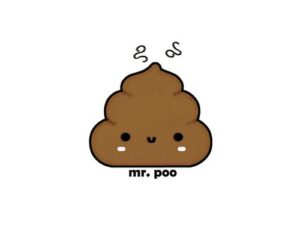
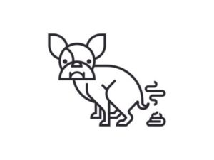
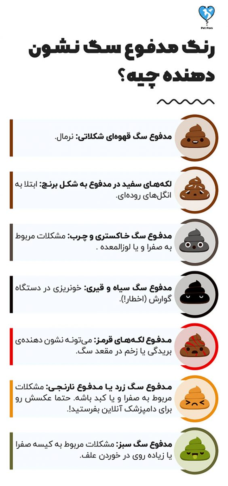
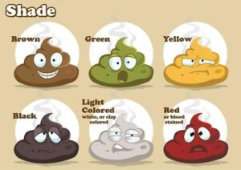
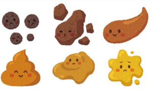
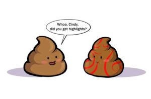
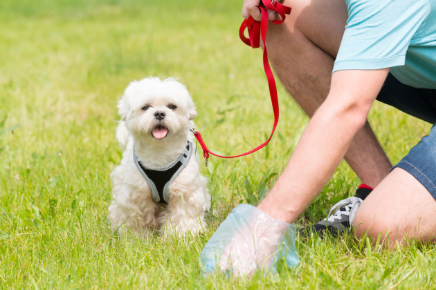
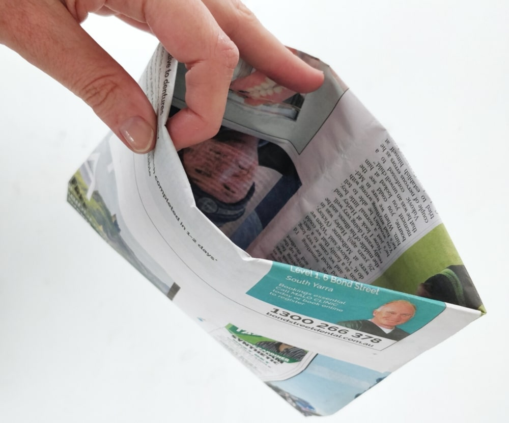

همونطوری که میدونین مدفوع سگ شما پر از نشانه است و برای اینکه بفهمید سگتون سالمه یا مریضه و آیا نیاز داره که توسط یه دامپزشک معاینه بشه یکی از چیزهایی که باید بهش توجه کنید مدفوعشه. پس اگه سر مدفوع سگتون وسواسی میشین و به هر جزییاتی دقت میکنید اما دقیق نمیدونید که چی به چیه این مطلب ما میتونه در دنیای جدیدی رو به روتون باز کنه. کمربندا بسته!!
وقتی از مدفوع سگ حرف میزنیم دقیقا از چی حرف میزنیم؟
مدفوع نرمال بین سگهای مختلف کمی متفاوته و از هر سگی به سگ دیگهای تغییر میکنه.
اما مورد اولی که باید به خاطر بسپرید اینه که در صورت تغییر ناگهانی ویژگیهای مدفوع سگتون حتما ببریدش پیش دامپزشک.
اما این ویژگیها شامل چه چیزهایی میشه:

رنگ طبیعی مدفوع سگ
رنگ مدفوع سگ باید قهوهای شکلاتی باشه ولی اگر غذایی که بهش میدین، افزودنی رنگی داره اون رنگ هم به همراه مدفوعش دفع میشه؛ پس انتظار تغییر رنگ رو داشته باشید.
شکل مدفوع سگ طبیعی
شکل مدفوع سگ باید خشک باشه. البته کمی آبکی شدن در سگ هایی که غذای مرطوب میخورن طبیعیه.
اندازه مدفوع
اندازه مدفوع سگتون باید متناسب با مصرف غذاش باشه.
یادتون باشه هرچقدر فیبری که توی غذای سگتون هست بیشتر باشه، میزان مدفوع سگتون هم بیشتر میشه.
استحکام مدفوع
مدفوع سگتون باید فشرده و مرطوب باشه و به راحتی از سطح زمین برداشته بشه.
مواد داخل مدفوع
مواد داخل مدفوع سگ میتونه نشون دهندهی خیلی چیزا باشه. مثلا اینکه سگتون دارای مشکلات انگلی هست یا خیر.
بیماری های انگلی سگ مثل کرم قلب میتونه خیلی خطرناک و کشنده باشه. پس بهتره مواظب سگتون باشین تا هر جایی نره و هر چیزی رو نخوره.
همین الان در مورد مدفوع سگت با دامپزشک آنلاین پت پرس مشورت کن
اگر شک داری مدفوع سگت طبیعیه و مشکلی وجود نداره یا طبیعی نیست و سلامتی اش در خطره، بدون تلف کردن وقت با دامپزشک آنلاین پت پرس مشورت کن و از مدفوع سگ براش عکس بفرست تا در مورد اقدامات بعدی راهنمایی ات کنه


بوی مدفوع سگ چطور باید باشه؟
بوی مدفوع باید در حد معمول باشه. بوی شدید میتونه نشون دهنده بیماری گوارشی سگ باشه.
پس تا الان یاد گرفتیم هر تیکه از مدفوع سگتون چند گیگ اطلاعات توی خودش داره که فقط کافیه باهاش به یه زبان مشترک برسید.
از نظر تعداد دفعات، سگ شما باید حداقل یه بار در روز دستشویی کنه!!

دلایل یبوست سگ یا سفتی زیاد مدفوع سگ چیه؟
یبوست سگ دلایل خیلی زیادی میتونه داشته باشه اما چندتا از مهمترینهاش عبارتند از:
- فیبر خیلی زیاد یا خیلی کم در رژیم غذایی (بهتره غذای سگ شما توسط دامپزشک متخصص تغذیه فرمول نویسی شده باشه تا اینجور مشکلات پیش نیاد. در این مورد به بخش برنامه غذایی سگ مراجعه کنید)
- نداشتن تمرین و فعالیت روزانه به اندازه ی کافی
- بسته شدن یا عفونی شدن غدد مقعدی
- خوردن مقدار زیادی مو ( اگه زیاد در حال لیسیدن خودش پیداش میکنین و توی مدفوعشم مو پیدا میشه، این میتونه یه دلیل محکم باشه)
- اصلاح موی ناکافی ( اگه موهاش در نزدیکی مقعدش به حالت نمدی در اومدن میتونن جلوی خروج مدفوع از مقعد رو بگیرن)
- گیر کردن اجسام خارجی مثل شن، استخوان، گیاه یا پلاستیک در روده
- عوارض جانبی احتمالی برخی داروها
- کم آب شدن بدن سگ که میتونه علائمی جدی تر رو هم به همراه داشته باشه.
دلایل اسهال سگ یا شل بودن زیاد از حد مدفوع سگ من چیه؟
اسهال سگ دلایل خیلی زیادی میتونه داشته باشه اما چندتا از مهمترینهاش:
- یه اتفاق استرس آور مثل آوردن سگ یا حیوان جدید، جابهجایی خونه، اضافه شدن فرد جدید به اعضای خانواده و ….
- عوض کردن ناگهانی غذاش
- خوردن غذای خانگی (غذای آدم!)
- عوارض جانبی برخی داروها
- خوردن آب کثیف از گودال یا حوضی راکد
- عفونت یا بیماری خاص
انواع رنگ مدفوع سگ چه معنایی دارن؟
- مدفوع سگ قهوهای شکلاتی: نرمال
- مدفوع قهوهای با لکههای سفید: اگه لکهها به شکل دونههای برنج هستن میتونه نشون دهندهی کرم روده و مدفوع سگ باشه.
- مدفوع سگ خاکستری و چرب: میتونه نشون دهندهی مشکلات مربوط به صفرا و یا لوزالمعده باشه.
- مدفوع سگ سیاه و قیری: میتونه نشوندهندهی خونریزی در دستگاه گوارش باشه. هرچه سریعتر به دامپزشک مراجعه کنین.
- مدفوع لکههای قرمز: میتونه نشون دهندهی بریدگی در قسمت مقعد سگ باشه.
- مدفوع سگ زرد یا مدفوع نارنجی: میتونه نشون دهندهی مشکلات مربوط به صفرا و یا کبد باشه. حتما با دامپزشک مطرح کنین.
- مدفوع سگ سبز: میتونه نشون دهندهی مشکلات مربوط به کیسه صفرا یا زیاده روی در خوردن علف باشه.

مدفوع سفید رنگ سگ نشانه چیست؟
علت مدفوع سفید سگ و رنگ خاکستری روشن مایل به سفید اغلب نشونه مشکلات و بیماریهای مربوط به کبد و کیسه صفرا، مشکلات روده یا عملکرد ناقص پانراکس است که آنزیمهای مهم را تولید نکرده است.
همین طور رژیم غذایی نامتوازن و مملو از کلسیم یا مصرف بیش از حد استخوان هم میتونه باعث رنگ سفید و گچی مدفوع سگ بشه. این نوع مشکل بیشتر در سگهایی که غذای خام میخورن مشاهده میشه.
آیا وجود مخاط در مدفوع سگ طبیعیه؟
به طور طبیعی همیشه مقدار خیلی کمی مخاط در مدفوع سگ وجود داره. این ماده لجن مانند توسط روده و برای روان و مرطوبنگهداشتن روده بزرگ تولید میشه و کاملا سالم و مفیده.
اما مشاهده مقدار زیاد مخاط در مدفوع سگ اصلا طبیعی نیست!
مخاط زرد رنگ یا روشن در مدفوع به مقداری که کاملا با چشم غیرمسلح قابل مشاهده باشه میتونه نشونه عفونتهای باکتریایی، شقاق یا فیشر مقعدی، انسداد روده یا بیماری التهابی روده باشه.

تاثیر غذای سگ روی مدفوع
بعضی از برندهای غذای سگ به طرز محسوسی میزان فیبر بیشتری رو دارن که فیبر بیشتر باعث افزایش حجم مدفوع سگ میشه. میزان فیبر نرمال در غذای سگ ۱۵ درصد هست. بهتره قبل از تهیه غذا برای سگتون به میزان فیبر و کالری اون توجه کنین چون باعث میشه بتونین بر اساس فعالیت سگتون بهش غذا بدین.
فرقی نمیکنه که سگ شما پیر، جوون و یا یک توله هست؛ شما باید تغذیه اون کنترل کنین. پیشنهاد میکنم مقاله «غذای سگ» رو مطالعه کنین تا بتونین بهترین غذا رو برای سگتون انتخاب کنین.
علاوه بر این بدن سگها برای جذب بعضی از مواد غذایی مثل غلات یا سیبزمینی طراحی نشده به همین خاطر وقتی غذای سگ شما بیش از حد نرمال شامل این مواد باشه حجم و بوی مدفوع بیشتر میشه.
بو و حجم مدفوع سگتون تحت تاثیر نوغ غذایی هست که بهش میدین!!
اسهال در سگها
همونطوری که میدونین اسهال یکی از شایع ترین مشکلاتی هست که سگها در طی زندگیشون باهاش مواجه میَشن پس خوبه کمی بیشتر در موردش گپ بزنیم.

کی به دامپزشک مراجعه کنم؟
بیشتر سگها اسهال رو برای یکی دو بار هم که شده در زندگی تجربه میکنن پس اسهال چیز عجیب و غریب و ترسناکی نیست به شرطی که طی ۱۲ الی ۲۴ ساعت بهتر و یا کامل خوب بشه. دلیل بیشتر این نوع از اسهالها هم میتونه غذای نامناسب یا استرس باشه. اگه سگتون به نظر سرحالتر میاومد( به این معنی که نرمال رفتار میکرد و سطح انرژی نرمالی هم داشت) میتونین با خیال راحت مدفوعش رو تحت نظر داشته باشید تا طی یکی دو روز کامل برطرف بشه.
اما اگه اسهالش با مسائل دیگهای مثل تب، تغییر رفتار، بی اشتهایی و بی حالی و … همراه بود وقتشه که با دامپزشک تماس بگیرید. خوبه که یه نمونه از مدفوع سگ رو همراه خودتون به دامپزشکی ببرید. حتی اگه آبکی هست میتونید با یه بیلچه مدفوع و مقداری از خاکهای اطرافش رو داخل یه کیسه بذارید.
اگر براتون امکان پذیر نیست، حتما ازش عکس بگیرید و برای دامپزشک بفرستید.
درمان خانگی اسهال سگ
اگر سگتون بزرگساله و نرمال رفتار میکنه، بهترین کاری که میتونید انجام بدید. قطع کردن غذاش به مدت ۱۲ ساعت هست. یادتون باشه فقط غذا! و نه آب.
برای زمانی که سگ اسهال داره خوبه کلی آب تمیز براش بگذارید تا بدنش دچار کم آبی نشه
بعد از ۱۲ ساعت رژیم غذایی ملایم پیشنهاد میشه که شامل گوشت بوقلمون و کدو حلوایی یا مرغ آب پز و برنج ساده هست. یادتون باشه چربی باعث شدیدتر شدن اسهال میشه و گوشت بوقلمون یکی از کم چربیترین انواع گوشت محسوب میشه. گوشت بوقلمون و کدو حلوایی رو به میزان مساوی ترکیب کنین و در دو یا سه وعده با حجم کم به سگتون بدین تا مدفوعش به حالت عادی برگرده. اسهال سگ میتونه تا ۷۲ ساعت طول بکشه اما اگه دیدین تمام موارد رو رعایت کردین ولی نتیجهای نگرفتین حتما به دامپزشک مراجعه کنید.
چند سوال شایع در مورد سگ و مدفوعش
علت وجود خون در مدفوع سگ چیه؟
اول از همه خونسردی خودتون رو حفظ کنید. علت مدفوع خونی سگ و مشاهده خون تازه میتونه نشونهای از عفونت یا پارگی جزیی مقعدی سگتون باشه. سعی کنید ببینید میتونید جای پارگی رو پیدا کنید یا نه. حتما با یه نمونه تازه از مدفوع سگتون به دامپزشک مراجعه کنین.
اسهال خونی میتونه نشونهای از یه بیماری خیلی جدی توی سگها به اسم پاروا ویروس باشه.
اگه سگتون رو به موقع واکسینه کردین نگرانی چندانی از این بابت نداشته باشید. چون حتی در صورت ابتلا، علائم بیماری خیلی خفیف میشن. اینجا میتونید بیشتر در مورد این بیماری مطالعه کنید: پارواویروس در سگ ها

چرا سگ من مدفوع میخوره؟
حقیقت ماجرا اینه که هنوز مشخص نیست که چرا بعضی از سگها دوست دارن اینکارو بکنن ولی ظاهرا بو و مزهی مدفوع براشون آزار دهنده نیست.
چطور نگذارم سگم مدفوع خودشو بخوره؟
اینکار به کمی آزمون و خطا احتیاج داره ولی بهترین گزینه اینه که هرچه سریعتر مدفوعش رو از زمین جمع کنین و یا از اسپریهای دور کننده مخصوصی که میتونین روی مدفوع بزنید، استفاده کنید. علاوه بر این مثل تموم آموزشهای دیگهای که به سگتون میدین باید کمی جدیت به خرج بدین و ازش بخواید که اینکار رو نکنه. اگه مشکل سگتون چدیه میتونین از مربی سگ هم کمک بگیرین.
اگر سگتون رو درست تربیت کرده باشید فرمان «نه» و «نکن» رو بلده و میتونین تا به سمت مدفوعش رفت این دوتا فرمان رو بهش بگید و به سگتون تشویقی بدید. یادتون باشه هر نوع تشویقی رو به سگتون ندید چون ممکنه با رژیم غذایی اش تداخل داشته باشه.
بهتره قبل از دادن هر نوع تشویقی به سگتون مقاله «تشویقی سگ» رو بخونین تا بدونین که به سگتون چه نوع تشویقی رو بدین.
چرا سگ من باسنش رو روی زمین میکشه؟
اینکه سگتون باسنش رو به زمین بماله میتونه به خاطر سفت شدن مدفوعش باشه. سفت شدن مدفوعش باعث میشه نتونه به راحتی کارشو انجام بده و مجبور باشه برای اینکار از زمین و زمان کمک بگیره. اما این ماجرا میتونه دلایل جدیتری هم داشته باشه. پس اگر اینکار برای سگتون به یه عادت همیشگی تبدیل شده، خوبه که با دامپزشک در موردش صحبت کنید چون ممکنه کیسههای مقعدی سگتون دچار مشکل باشن. (مطلب مرتبط: کیسه مقعدی سگ)
دلیل اسهال گرفتن سگم بعد از تغییر غذاش چیه؟
خب همونطوری که معده و دستگاه گوارش ما به زمان نیاز داره تا با غذاهای جدید کنار بیاد، دستگاه گوارش سگتون هم ممکنه در هضم غذای جدیدی که براش تهیه کردید دچار مشکل بشه. به همین خاطر خوبه که تغییر غذاش به صورت آهسته و در طی دورهای هفت الی ده روزه اتفاق بیوفته. به این ترتیب که هر روز مقدار کمی از غذای جدید رو به حجم غذاش اضافه کنین و به همون میزان از غذای قدیمیش کم کنین.
چرا باید مدفوع سگم رو از روی زمین جمع کنم؟
در مورد اهمیت جمع کردن مدفوع سگ از روی زمین کمتر صحبت میشه؛ ولی یادمون باشه نگهداری از یه حیوون با تمام خوبیهاش سختیهایی هم داره و لازمه که در برابر سختیهاش صبور و مسئولیتپذیر باشیم.

مضرات مدفوع سگ برای گیاهان و محیط زیست
مدفوع سگ کود نیست!!
در واقع به خاطر تفاوت سیستم گوارش و رژیم غذایی، حیوونها مدفوعهای متفاوتی دارن. پس اگر مدفوع گاو کود محسوب میشه لزوما مدفوع سگ هم کود نیست. و بدتر از اون به خاطر موادی مثل نیترات و فسفر اثر معکوس کود رو داره و میتونه باعث خشکیدن گیاهان بشه و خاک رو از حالت حاصلخیزیش خارج کنه.
مدفوع سگ به خاطر انواع انگلها و باکتریهاش باعث بیماری سگ و انسانها میتونه بشه.
مدفوع سگ هم مثل هر ضایعات دیگهای محل رشد باکتری و انگل هست. این انگلها تا سالها بعد از تجزیه شدن خود مدفوع توی خاک میمونن و میتونن باعث بیماری سگها و انسانها بشن. حتی سگ خود شما هم از این خطر در امان نیست. پس یادتون باشه با اینکار از خودتون، سگتون و جامعهای که توش زندگی میکنید مراقبت میکنید.
یک سال طول میکشه تا مدفوع سگ تجزیه بشه.

خب مدفوع سگ خیلی سریع تجزیه نمیشه پس اگه فکر میکنید دفعهی بعدی که سگتون رو برای قدم زدن بردین دیگه از مدفوع قبلی خبری نیست در اشتباهین.
اگه به محیط زیست علاقمندین و دنبال کم کردن هزینههای نگهداری سگتون هستین، میتونین با روزنامههایی که خونده شدن پاکتهایی درست کنین و برای هر قدم زنی که به بیرون میرین یه پاکت روزنامهای هم با خودتون ببرین. اینجا یه لینک آموزشی براتون گذشتیم که میتونین ببینیدش.
نظر شما چیه؟
شما چه تجربهای در این مورد دارید؟ تا حالا با رنگ غیرعادی مدفوع سگتون مواجه شدید؟ دلیلش چی بود و شما چه اقدامی انجام دادید؟ لطفا برای ما کامنت بذارید و نظر، تجربه و سوالات خودتون رو در این باره با ما در میون بذارید. کارشناسان ما در اسرع وقت به سوالات شما پاسخ میدن.
سلام سگم مالاموته چند وقته دکتر براش فنوباربیتال ١٠٠تجویز کرده به خاطر تشنج جدیدا مدفوع ش خیلی سفت و غیری رنگ شده چه علتی داره به خاطر قرصه یا تغذیه؟!
سلام پویان عزیز،
هم میتونه از عوارض قرص باشه هم بسته به اینکه تو رژیم غذایی چی هست میتونه بخاطر تغذیه هم باشه. در مدت مصرف این دارو وضعیت سلامت کبد و آنزیم های کبدی رو هم مدنظر قرار بدین.
سلام خسته نباشید.
من یه شیتزوی دو ماهه دارم. امروز اندازه ی مدفوعش بیشتر از همیشه بود. و بعد از اینکه دستشویی کرد کمی مدفوع ازش به طور کامل خارج نشده. یکم هم بیحال هست ومثل همیشه تحرک نداره. مدام خودش رو روی زمین میکشه.
میشه راهنماییم کنید که باید چیکار کنم تا چند ساعت آینده که ببرمش دامپزشکی.
سلام. شیتزو ۷ ماهه من مدفوع خواری داره. مدفوع نمیکنه تا ما بخوابیم و بتونه بخوره. شامشو ساعت ۷ شب میدم تا ۱۲ میشینم ولی خبری نیس تا ما بخوابیم. چکارش کنم؟
سلام فریبا جان،
ممکنه مشکل کمبود ویتامین داشته باشه. یا اینکه صرفا مشکل رفتاری و برای جلب توجهتون باشه. دعواش نکنین و سعی کنین اقدامات تربیتی رو شروع کنین براش. این کتاب بهتون کمک میکنه که اگه مشکل رفتاری باشه حلش کنین:
تربیت سگ شتیزوتریر، شیتزو و تریر
اما اگه همچنان این رفتارش ادامه داشت برای اقدامات درمانی کمبود ویتامین میتونین از مشاوره ی آنلاینمون استفاده کنین:
مشاوره دامپزشکی آنلاین حیوانات خانگی- سوال مستقیم و تخصصی از دامپزشک پت پرس
سلام سگ من غذاشو نمیجوه و فقط قورت میده هر اندازه ای ک باشه چیکار کنم
سلام محمد عزیز،
چندتا کار میشه انجام داد: غذاشو یکم مرطوب کنین یا کلا غذای تر بدین، ظرفش بزرگتر باشه که بتونین لایه نازکتری از غذارو کف ظرف بریزین، تعداد وعده هارو زیاد کنین و مقدار غذاشو تقسیم کنین برای وعده ها که کمتر بشه، میتونین یه ظرف کوچیکترو بصورت برعکس داخل ظرف بزرگش قرار بدین و غذاشو دور اون بریزین که نتونه یک جا و سریع غذا بخوره، میتونین قسمتی از غذاش رو داخل اسباب بازی و بازیای فکری بذارین که با وقت گذاشتن برای رسیدن به غذا آرومتر و بهتر غذا بخوره.
سلام خدمت شما و ممنون از صفحه خوبتون
من یه سگ شیتزو ماده ۴ ماهه دارم که در طول روز تعداد دفعات مدفوعش بالاست ایا نرماله؟روزی ۶ بار که خیلی اذیتم میکنه میشه کمکم کنید
سلام دوست عزیز،
اگه علائم دیگه ای نداره احتمال زیاد طبیعی هست. حدودا ۵-۱ بار در روز طبیعیه، اگه هربار مقدار کمی غذا میخوره ممکنه بیشتر مدفوع کنه، بیماری ها هم میتونن تعداد دفعات رو کم یا زیادتر کنن.
سلام چشم حتما به دکتر می گگیم که گفتم .و الان خدارو شکر
بعد از چند روز داره ادرارش قهوه ای نی شه فعلا یک زره تعقیر کرده
ممنونم از گزارش های مفیدتون .
سلام .سگ من هم مصل شما که تووبلاگتون نوشتین .و سگم
باید بگم چند روز دستشویی زرد می کنه ،لطفا اگه می تونید کمک کنید
یه سری هم به وبلاگ بزنید😍😍🙏🙏ولی باز جملاتتون خوندم.
و وبلاگتون خیلی خوب …امیدوارم تن درست باشید…..
سلام دوست عزیز،
ممنون از لطفتون.
مشکلی که میگین نیاز به بررسی بیشتر داره. درصورت امکان حضوری به دامپزشک مراجعه کنین یا میتونین مراحل ثبت مشاوره آنلاین رو انجام بدین تا بتونیم بیشتر راهنماییتون کنیم:
مشاوره دامپزشکی آنلاین حیوانات خانگی- سوال مستقیم و تخصصی از دامپزشک پت پرس
ببخشید خانم دکتر متوجه نشدم اگه به راحتی مدفوعش دفع کنه چجوری متوجه شم به راحتی…..
با سلام یه سگ اشپیتز دو ساله ونیمه به اسم ((پتی)) ،داریم… خلاصه میگم چون زیاد تو رو خدا کمکم کنید کلی هزینه کردم تو این بی پولی کرونا که هیچ ای ن زبون بسته هم که نمیتونه بگه چمه داریم دق میکنیم…..
دوتا تکه استخوان مرغ خورده بود شبش یکم بیقرار بود رفت واسه دستشویی که چندتا لکه خون دیدم تو حمام گفتم نکنه واسه پتی باشه که همون لحظه دوباره اومد دیگه بجای پی پی فقط لکه های خون دیدم از ترس اون ویروس خطرناکه پارا….نمیدونم سریع دویدم تا ببمارستان شبانه روزی 😔😭 اونجا سرم رینگر ، امپول بکمپلکس، دیمترون،، مترانیدازول،،سفتراکس رقیق شده،،پنتور پنازول همگی وریدی با انژیو کت بکمپلکس داخل سرم ۲۵۰ س ساز ساعت ۱ تا شش صبح ازش ازمایش خون گرفتن
که فرداش گفتن خیلی جزی عفونت داره که بای هر ۱۲ ساعت باید بمدت پنج وعده دیگه بیاددددد🤔انجام بده ما هم انجام دادیم و تست اون ویروس خطرناکه که گفتم منفی بود خدا شکر🤲 ولی از روز دوم تهو شروع شد که گفتن بعلت گشنگی بی اشتها بود میگفتن کاری بجز سرم نمیشه کرد😔😔 یک روز اصلا پی پی نکرد بعدش بشکل شل با قطرات یا لکه های خون بعدش الان سیاه رنگ بشکل قیر امیدوارم کامل گفته باشم
جان هرکس که دوست دارین جواب منو بدین😭😭😭😭
تو گوگل سرچ کردم خیلها خیلها از این بیمارستان بعنوان غسال خونه 😔😔قصابی و ناراضی بودن دامپزشک خوب نمیشناسم تو این وضعیت بیکاریم و بی پولی کرونا دیگه بدتر استرس و حالت خفگی دارم….
ممنون اگر وقت گذاشتین برای پتی ما دعا کنید😭🤲🤲
سلام جواد عزیز،
متاسفم بابت مشکلی که پیش اومده. ممکنه این علائم بخاطر خوردن استخوان باشه. درصورت امکان هرچه سریعتر به یه بیمارستانی که ازنظرتون معتبره مراجعه کنین. اکثر بیمارستانا و دکترا شرایط رو درک میکنن و بهتون مهلت میدن هزینه های لازم رو جمع آوری کنین، درحال حاضر تنها چیزی که مهمه سلامتی پتی هستش.
خانم دکتر و خواهش میکنم میشه بگید که چجوری بفهم از دهنش خون یا ازمدفوع خون میاد راهی دیگه هست که بفهم
سارا جان،
البته مصرف بعضی قرصا و بعضی مواد غذایی هم بخاطر یسری مواد خاص میتونه مدفوعو تیره رنگ کنه. (بنابراین مواد موجود توی قرص یا غذای جدیدی اگه بهش دادین رو بررسی کنین که آیا امکان داره تغییر رنگ مدفوع بدن یا نه. درست مثل مصرف قرص بیسموت و آهن در انسان)
اگه مدت طولانی هستش که این قرصو مصرف میکنه و تا الان مدفوعش تغییر رنگ نداده بود احتمال اینکه بخاطر قرص باشه پایینه.
اگه توی مدفوع خون تازه و هضم نشده ببینین یعنی خونریزی برای قسمتای پایینی دستگاه گوارشه مثل روده ی بزرگ اما اگه خون مال قسمتای بالایی دستگاه گوارش باشه مثل معده و روده ی کوچیک مدفوعو سیاه و قیری رنگ میبینیم.
با توجه به تاریخچه ای که دادین که مصرف استخوان داشته هم توی تشخیص تاثیر داره. و چون میگین هنوز فعالیت خودشو داره وضعیت اورژانسی نیست که بابتش نگران باشین صرفا به دامپزشک حضوری مراجعه کنین تا احتمالات ممکن رو بررسی کنن.
بله خانم دکتر فقط قرض پاش که دکترش گفت هفته ی یک بار بدید گفت خیلی قوی
از دیشب دادم بهش بعد این دیدم مدفوعش سیاه هست بعد تمیز که کردم دیدم سبزه
فقط اگه دوباره مدفوعش سیاه باشه خطرناک دیگه صد در صد از گوارشش؟؟
نه لزوما سارا جان،
قطعی نمیشه با یه علامت مشکلیو تایید کرد. دلایل مختلفی وجود داره که میتونه مدفوعو تیره رنگ کنه که با استفاده از تاریخچه و تستای بالینی میشه تفکیکشون کرد.
میتونه بخاطر قرصش باشه که از دیشب شروع کردین. تا هفته ی دیگه که میخواین دوباره قرصو بدین مدفوعشو زیر نظر بگیرین اگه رنگش کمرنگ تر داشت میشد بخاطر همون قرصه.
از این به بعد هم ترجیحا توی تغذیش استخون ندین که خطر آسیب گوارشی نداشته باشه عزیز.
بله زیر نظر دارم خیلی ببخشید امشب پی پی نکرد الهی که دستم بشکنه
خیلی وقت بود نمیدادم غضروف میدادم
اشتباه کردم اشتباه
سارا جان مهم اینه که الان آگاهین و اشتباهات پیش میاد.
بعد یکی دو روز دستشویی نکردن اگه اندازه ی مدفوعش مثل همیشه بود و به راحتی دفعش کرد جای نگرانی نیست ولی اگه همچنان بعد یکی دو روز دفع نداشت یا موقع دفع سختی داشت لازمه که به دامپزشک ببرینش تا با داروی مناسب کمکش کنه دفع کنه و علت بررسی بشه.
سلام خانم دکتر خوب هستید ببخشید مزاحم شدم خدارو شکر تونی جان حالش خوبه درستشویی شو زیر نظر دارم از اون هفته بعداز دو روز دستشویی کرد رنگش رنگ قهوه ایی کم رنگ بود بعد خانم دکتر و تونی دو روز یه بار
یا یه روز دوبار پی پی میکنه این یعنی مشکل داره ؟
سلام سارا جان،
خداروشکر خوبه پس بخاطر همون قرصش بوده نگران نباشین. نه مشکلی نداره فقط طولانی تر نشه، بسته به اینکه غذاش چیه، چقدر فعالیت داره، چقدر در روز آب میخوره میتونه فواصل زمانی دفعش متفاوت باشه.
دفع راحت یعنی اینکه وقتی حالت دستشویی کردن داره خیلی درحال زور زدن نباشه و طبیعی باشه همه چی. (دقیقا مثل موقعیکه یبوست اتفاق میافته و هرچی مدفوع سفت تر باشه دفعش سخت تره و یا اگه مشکل دیگه ای باشه درد موقع دفع کردن)
بلفیه من رفته تویکسال شیتزوتریره و اینکه مشکل گوارش داره صبح نصف وشب نصف بهش سایمتیدین میدم شکمش گاهی قاروقورمیزنه گاهی غذاخوب میخوری وگاهی بومیکنه ونمیخوره غذای مرغ پخته میدم وغذای خشک گاهی یکی دوروزه بهش گردن مرغ دادم امروز دیدم پی پیش خشکه گرداگرد ویژه تیکه خیلی کوچیک خون توش بود وکمی زورزدمن خیلی حساسم بدنباشه چیکارکنم
سلام دوست عزیز با توجه به اینکه سوال شما شخصی هست، پاسخ بهش در قسمت دیدگاه ها امکان پذیر نیست.
لطفا برای راهنمایی گرفتن بهتر از طریق لینک زیر در سایت ثبت نام کرده و سوالتون رو مستقیم با دامپزشک مطرح کنید تا مشکلتون بررسی بشه:
مشاوره آنلاین دامپزشکی
سلام من یه توله جرمن دارم که الان ۱۳ روزشه و مادر نداره.
از ۵ روزگی خودم دارم بهش شیر میدم.
دیشب با صدای جیقش از خواب بیدار شدم.رفتم اول ادرارشو گرفتم که خیلی هم بود بعد مدفوعشو گرفتم که یکم بیشتر مدفوع نکرد.اما شکمشو دست زدم خیلی سفت بود بعد نیم ساعت شکمش شل شد.و شروع کرد به شیر خوردن.
الان هم خوابه.
سوال من اینه که ایا تو این سن بازم باید برای مدفوع کردن ماساژ داده بشه یا نه؟
و اینکه حالت عادی و نرمال در ۲۴ ساعت چند بار باید مدفوع کنه؟
ممنون میشم که جوابمو زودتر بدید
سلام حمیدرضای عزیز،
اگر مقدار و غلظت شیری که بهش میدین غلیظ یا رقیق باشه (خصوصا شیرخشک مخصوص توله سگ) میتونه باعث مشکلات گوارشی مثل یبوست و اسهال بشه.
بله تا حدود یک ماهگی لازمه که کمکشون کنین بعدش خودشون میتونن دستشویی کنن و وقتشه که بهشون جای دستشویی کردن رو یاد بدین.
بسته به تعداد دفعاتی که شیر میدین بهش (برای این سن حدود هر ۴ ۵ ساعت یه بار) نیم الی یکساعت بعدش ماساژ دادن ناحیه تناسلی رو انجام بدین که دفع انجام بشه.
پیشنهاد میکنم برای اطلاعات بیشتر این مقاله رو مطالعه کنین:
همه چیز درباره نگهداری از توله سگ چند روزه تا سن دو ماهگی
شیر خشک دکتر کلادرز مخصوص سگ دادم بهش اسهال شد بعد رفتم شیر خشک بدون لاکتوز انسانی برند ببلاک خریدم و دیگه اسهال نگرفت.
الانم مدفوعش سفت نیست اما نمیدونم که چند مرتبه در ۲۴ ساعت باید مدفوع کنه.
هر ۳ساعت ۳۰ میل شیر میخوره
اینکه شیرخشک بدون لاکتوزو جایگزین کردین انتخاب کاملا درستی بود. کلا اینکه چه شیرخشک مخصوص خودشون چه انسانی مقدار و غلظتش نه خیلی کم باشه نه خیلی زیاد. خوبه که قلقش دستتون اومد که اسهالش ادامه دار نشد.
بخاطر نوع تغذیه ای که دارن طبیعیه مدفوعشون اونقدر سفت نباشه.
اگه هر ۳ ساعت بهش شیر میدین حدود نیم ساعت بعدش بهتره اقدام کنین واسه دفع مدفوعش، که حدودا میشه ۸ بار در روز. (به تعداد هر باری که شیر میدین بهش)
سلام ببخشید مزاحم شدم بنده شیتزو تریر دارم ۶ سالشه دیشب برای اولین بار دیدم مدفوش به رنگ سیاه قیری بود بهش یه تیک استخوان مرغ بهش دادم
بعد قرص مفاصل خیلی قوی استفاده میکنه ممکنه از قرصش بلشه؟
سلام سارا جان،
مصرف استخوان میتونه به گوارشش آسیب زده باشه. حضوری به دامپزشک مراجعه کنین.
سلام، مستاجرم توی حیاط خونهای که بهش اجاره دادم سگ نگهداری میکنه و اون هم همش توی باغچه پی پی میکنه و باغچه هم پر از گل و گیاه و درختان مختلف هستش، آیا واقعا پی پی سگ برای باغچه ضرر داره و باید تذکر جدی به مستاجر بدهم
سلام فردین عزیز،
بهتره که مستقیم توی باغچه مدفوع نکنه. درواقع میتونین تشویقشون کنین که درباره ی کمپوست مطالعه کنن و از مدفوع سگشون توی مواد کمپوست استفاده کنن، چون دمای فرایند کمپوست شدن بالاست و تقریبا اکثر عوامل مشکل زا رو از بین میبره. از اون کمپوست بعد میتونن بعنوان کود مناسب برای باغچه یا حتی گیاهان آپارتمانی استفاده کنن.
سلام مدتی مدفوع سگ من ابکی شده و کم اشتهاشده دامپزشکتون میتونه راهنماییم کنه؟
سلام دوست عزیز بله از قسمت مشاوره دامپزشکی اقدام کنید
سلام ، وقت بخیر
من یه سگ شیتزو دارم که تازه رفته تو ۲ ماه
در کنار شیر چند روزیه که بهش سیب زمینیه آبپز میدم
مدفوعش رنگ زرد بود تا این ک امروز ی تکه نارنجی هم توی مدفوعش دیدم ، خیلی نگرانشم ، مشکلش قابل حل شدنه؟؟؟؟؟؟ ممنون میشم کمکم کنید
سلام زیبا جان،
بخاطر تغذیه ای که صرفا بر پایه شیر بوده رنگش زرد بوده، شروع که کردین مواد غذایی دیگه مثل سیب زمینی بهش دادن تازه رنگش داره به رنگ مدفوع طبیعی نزدیکتر میشه و جای نگرانی وجود نداره. بعدا که غذاش بره سمت غذای خشک، کنسرو و تشویقی رنگ مدفوعش تیره تر میشه.